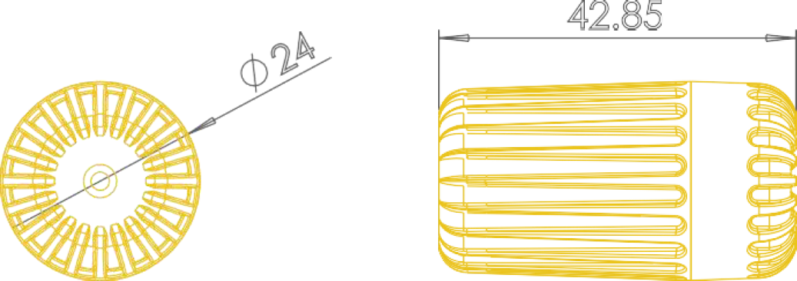
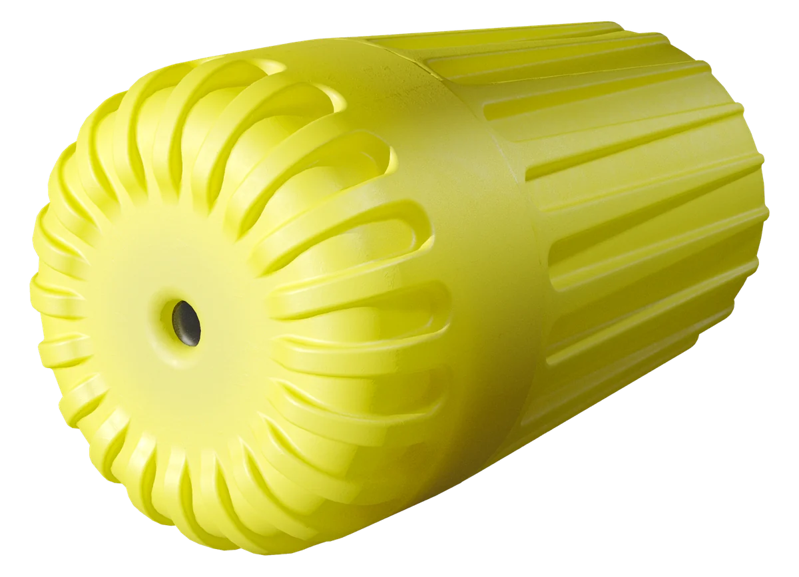

SNTH wireless sensor
Temperature and humidity, inside the material.
A Ø24 mm sensor that fits a standard drill hole in timber, concrete or a wall, survives being cast into fresh concrete, and reports every ten minutes for up to ten years.

Specifications
| Measured values | Temperature, relative humidity, battery voltage, signal strength |
|---|---|
| Accuracy (typical) | ±0.2 °C; ±2 % RH |
| Range | −20 to +60 °C; 5–100 % RH |
| Housing | Ø24 × 42.85 mm, 30 g, IP68. Direct water contact and cast-in capable |
| Battery | CR2 lithium, up to 10 years at a 10-minute interval |
| Radio | 868 MHz SRD band, +14 dBm, ETSI EN 300 220; up to 300 m to the gateway in the open, about 100 m indoors |
| Reporting interval | 10 minutes by default, configurable |
| Installation | Ø24 mm hole, 45 mm deep; cast into fresh concrete; or free placement on a shelf or wall |
| Price | per sensor, end-user price excl. VAT |


Every reading carries its own quality data
Each packet contains the sensor ID, a sequence number, the temperature and humidity, the battery voltage and the received signal strength. That is what makes the data trustworthy over years: a gap in the sequence numbers tells you how many packets were lost, a drop in signal strength tells you where the radio path became harder, and the battery curve tells you how much life is left.
In the analysis this separates problems cleanly. Network-wide gaps point to the back-haul, synchronised drop-outs of a group point to the radio path, a corrupted sequence counter points to one sensor, and a constant offset points to the position rather than the device.
Where it is used
- Timber members, roof cavities and CLT elements, converted to wood moisture per species
- Cast-in concrete and screed, feeding maturity and drying calculations
- Cold rooms, warehouses and pharmacies that need a continuous, alarmed record
- Showcases, depots and churches with narrow climate bands
- Hay stacks and grain bins, far from mains and internet
- Server rooms and telecom shelters, independent of the site network
Installation takes a minute per point
Drill a Ø24 mm hole 45 mm deep, mark the position, push the sensor in, close the hole with a wooden plug. The first packet arrives within ten minutes; a crew installs about 50 points in a day.


Start with your own data in ten days.
The Demo Set (one gateway, three sensors, three months of software) is delivered within ten working days and commissioned remotely. Send a sketch or floor plan and the coverage plan comes back within three working days.
- Phone
- +359 888 920 108
- info@sitech.consulting
- Office
- 66B Manastirski Livadi Street, 1404 Sofia, Bulgaria